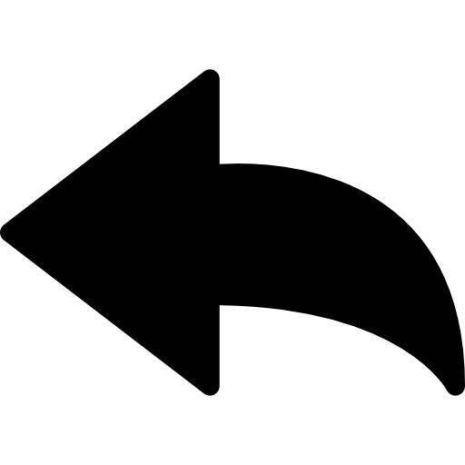

Estado del Proyecto
Este sitio web fue publicado exitosamente utilizando Vercel CLI.

La mejora de Netherita es un objeto necesario para mejorar herramientas, armas y armaduras de diamante a Netherita.
Se utiliza en una mesa de herrería junto con el objeto de diamante y un lingote de Netherita.
Es una mejora muy valiosa porque aumenta la resistencia y durabilidad del equipo.

Versión 1.0 (Borrador de Prueba)